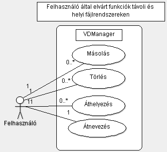

Történet
| Dátum |
Verzió |
Leírás |
Szerző |
| 2010.10.24. |
0.1 |
Dokumentum alapjai |
Fibinger Ádám |
| 2010.10.25. |
0.2 |
Bevezetés + helyi szótár |
Fibinger Ádám |
| 2010.10.26. |
0.3 |
Áttekintés, környezeti diagram |
Fibinger Ádám |
| 2010.10.27. |
0.3.1 |
Szótár kiemelése, Funkciók kidolgozása (funkció use-case ábrák, első verzió) |
Komjáthy Gábor |
| 2010.10.27. |
0.3.2 |
Másolás szöveges kidolgozása, TODO: másolás use-case ábra kiegészítése a szöveges alapján! |
Fibinger Ádám |
Tartalomjegyzék
Ha kész a doksi TODO
1. Bevezetés
Jelen dokumentum célja a VDMan szoftverrel szemben támasztott követelmények definiálása. A megközelítés minimalista,
nem definiál minden lehetséges funkciót, mindössze a szoftver legelsõ verziójának minimális képességeit határozza meg.
A szoftver 0.1-es verziószámú bemutatópéldányának, a jelen dokumentumban meghatározott funkciókat képesnek kell
lennie kielégíteni.
A projekt célkitűzése egy keresztplatformos fájlkezelő alkalmazás megvalósítása, mely a rendszerek által nyújtott
fájlkezelési szolgáltatásokat egységesíti, esetleges operációs rendszer migrációnál megkímélve a felhasználót egy
újabb fájlkezelő alkalmazás betanulásától.
A részletes célokért lásd a vízió dokumentáció "A végtermék áttekintése" pontot.
Jelen dokumentum olvasóközönsége széles, így az alkalmazott szakkifejezések pontos definíciójáért lásd a mellékelt Szótár
dokumentumot. Mivel az alkalmazott kifejezések esetén, a szótár szerinti definíciót értelmezzük így javasolt a dokumentum
elolvasása előtt áttekinteni azt, az eltérő értelmezésből eredő félreértések elkerülése végett.
A dokumentumban az alábbi kifejezések jelennek meg:
Felhasználó - a szoftvert használó személy.
Kezdõ Felhasználó - olyan felhasználó, akinek nincsenek meg a kellõ ismeretei egy (bármilyen) fájlkezelõ szoftver hatékony
használatához, a felhasználói dokumentáció számára nehezen vagy egyáltalán nem értelmezhetõ, problémái vannak az alapvetõ
fogalmakkal is.
Haladó Felhasználó - olyan felhasználó, aki a szoftverhez hasonló szoftverrel már dolgozott, tisztában van a
számítástechnikai alapfogalmakkal, képes önállóan, segítség nélkül dolgozni egy számára teljesen új felhasználói környezetben
is, dokumentáció alapján képes hatékonyan kezelni a szoftvert.
Fejlesztõ(k) - a szoftver implementációját végzõ személy, személyek.
Operációs Rendszer - a számítógépen futó operációs rendszer, mely lehet Windows, Linux és OSX (Macintosh) valamely típusa.
GUI - Graphical User Interface Grafikus felhasználói felület, melyen keresztül a felhasználóval kommunikálunk, tájékoztatjuk
azt
API -
protokoll
Üzemkész állapot - A szoftver a felhasználó parancsaira vár
2. Áttekintés
Ennek a fejezetnek a célja a készülõ alkalmazás szempontjából fontos általános körülmények összefoglalása. Ez nem konkrét
követelményeket tartalmaz, hanem azok hátterét világítja meg, segítve a következõ fejezetekben részletezett információk
megértését. Ide tartozhatnak olyan információk, mint például:
a termék környezete,
legfontosabb funkciók,
a felhasználók jellemzõi,
korlátozások,
feltételezések és függõségek,
a követelmények csoportosításának szempontjai.
2.1 Rendszer Környezetének Áttekintése
Context Diagram
A rendszer (VDManager) közvetlenül a GUI-n keresztül tartja a Felhasználóval a kapcsolatot. A felhasználó ezen a felületen
keresztül éri el a rendszer által biztosított funkciókat.
Az Operációs Rendszer jelen esetben a klasszikus értelemben vett operációs rendszer. (Windows, Linux, OSX)
A szoftver (VDManager) az Operációs Rendszer által biztosított API-k segítségével szolgálja ki a felhasználó által igénybe
kívánt venni funkciókat.
A Fájlrendszer a kezelni kívánt objektumok halmaza. Mivel eltérő Operációs Rendszerek eltérő Fájlrendszereket használnak,
így elérésük cél és szükségszerű az Operációs Rendszer által biztosított APIn keresztül.
A Hálózat (Network) opcionális, a helyi fájlműveletekben nem játszik szerepet. A Hálózat jelentheti az Internetet és az
adott számítógép helyi hálózatát is. Mivel a Hálózaton használt protokollok az Operációs Rendszertől függetlenek,
de az Operációs Rendszer által biztosított Hálózati rétegen keresztül érhetjük el őket.
A fájlszerver egy olyan munkaállomás, mely elérést biztosít meghatározott protokollon keresztül a Távoli Fájlrendszerhez.
Távoli Fájlrendszerként definiáljuk minden olyan Fájlrendszert, mely Hálózati kapcsolat nélkül nem elérhető.
A biztosítandó funkciók szempontjából a Távoli és Helyi fájlrendszerek ugyanazon struktúrában épülnek fel, így az
ezek közötti átjárást a felhasználó fele transzparensen kell biztosítani.
A VDManager a felhasználó utasításainak megfelelően kommunikál a szükséges objektumokkal, műveleteket végez rajtuk, hogy
a felhasználó által elvárt eredményt elérje. Ezek elsősorban az alapvető fájlműveletek és azok vonzatai.
2.2 Felhasználók, szerepkörök
A felhasználók viselkedhetnek Haladó és Kezdő felhasználóként is, átjárás a szerepek között lehetséges. A két szerepkör
eltérése egymástól a súgórendszer által nyújtott szolgáltatások használatában jelentkezik.
2.3 Operációs rendszerek sajátosságai
Mivel a szoftver eltérő operációs rendszereken fog futni, így figyelembe kell venni az Operációs Rendszerek által nyújtott
szolgáltatásokat, annak megfelelően implementálni az adott szolgáltatást / funkciót, hogy az lehetőleg mindegyik rendszeren
ugyanazt a célt szolgálja, eredményt produkálja. Amennyiben valamely operációs rendszer sajátosságát nem lehet
elhanyagolni, úgy az tervezésnél erre kiemelt figyelmet kell fordítani, hogy az alapvető funkció használatát
ez ne befolyásolja más rendszeren.
2.4 Felhasználói dokumentáció
A Felhasználói dokumentációnak elérhetőnek kell lenni a szoftveren belül. Mivel Operációs Rendszerenként teljesen eltérnek a
segítségnyújtó rendszerek, így saját rendszer megvalósítása indokolt. Ennek részletes követelményeit lásd az erre
vonatkozó pontban.
3. A rendszer funkciói
Specific Requirements
A rendszer funkciói
Ebben az alpontban kell összefoglalni a a rendszerrel szemben
támasztott funkcionális követelményeket.
A leírás történhet természetes nyelven és/vagy user case diagramok
használatával.
Természetes nyelvi leírás esetén az egyes alpontok egymás után
egy-egy követelmény specifikációját tartalmazzák. Szükség esetén a
követelmények a rendszer fõ szolgáltatásai, funkcionális moduljai
mentén csoportosíthatók.
Use case diagramok használata esetén a use case modell alapvetõen
use case csomagok sorozata. A csoportosítás ilyenkor a csomagok
segítségével történik, és egy-egy alpont egy csomagra vonatkozik. Egy
alpont ilyenkor az alábbiakat tartalmazza:
Egy use case diagram.
A diagramon szereplõ valamennyi aktor felsorolása, és pontos
definíciója (ha a dokumentumban már korábban elõfordult, akkor a
pontos hivatkozás a definícióra).
A diagramon szereplõ valamennyi use case felsorolása, és
pontos definíciója. Egyszerû esetben ez lehet természetes nyelvi
leírás, bonyolultabb esetben egyéb UML eszköz. (pl. szekvencia
diagram vagy együttmûködési diagram.) Minden use case leírás az
alábbiakat kell hogy tartalmazza, egy – egy alpontban:
A use case neve.
Rövid leírás.
Prekondíciók (elõfeltételek): azon feltételek felsorolása,
amelyeknek teljesülnie kell, mielõtt a use case által jelzett
tevékenység elkezdõdik.
Post kondíciók : annak leírása, hogy milyen állapot
következik be a use case végén.
Szokásos mûködés (Main Flow): azok az események / folyamatok,
amelyek a use case „szokásos” körülmények közötti
mûködését jellemzik. (Például egy pénzfelvételnél a kártya
beolvasása, pin kód beadása stb.)
Alternatív esetek (Alternate Flows): azok az események /
folyamatok, amelyek elõfordulhatnak, és ezért kezelendõk, de nem a
„szokásos” mûködéshez tartoznak. (Például a
pénzfelvételnél a kuncsaft helytelen pin kódot ad meg.)
Kivételes esetek (Exception Flows): azok a lehetséges
forgatókönyvek, amelyek váratlanul bekövetkezhetnek. (Például a
pénzfelvételnél egy olvashatatlan kártya, vagy áramszünet stb.)
A diagramon szereplõ use case-ek kapcsolatainak leírása.
És akkor itt jönnek a 3.1, 3.2 stb. alpontok az egyes
követelmények és/vagy use case diagramok leírásával.
3.1. Elsõ követelmény

A rendszer fő funkciói
A rendszer üzemkész állapotban a felhasználó szempontjából négy alapvető funkcióval rendelkezik:
- Másolás:

Másolás
A felhasználó egy adat objektumról (fájl, mappa) másolatot készít.
Prekondíciók: A szoftver üzemkész állapotban van.
Poszt-kondíciók: A forrásként megadott objektum duplikációja elkészül a felhasználó által megadott cél helyen (objektumon).
Szokásos működés (Main Flow): A felhasználó kijelöli a másolni kívánt objektumot (Forrás objektum megadása), majd megadja a célt
(Cél objektum megadása).
A Másolás parancs kiadása után:
- Forrás olvashatóságának ellenőrzése
- Forrás méretének meghatározása
- Cél objektum írhatóságának ellenőrzése*
- Cél objektum nevének ellenőrzése
- Cél objektumon a forrás méretének elegendő hely ellenőrzése
- Duplikálás megkezdése, amennyiben a fenti ellenőrzések rendben lezajlanak
Alternatív esetek:
- Forrás olvashatóságának ellenőrzése:
- Forrás nem olvasható: Felhasználó tájékoztatása, másolás megszakítása
- Forrás méretének meghatározása:
- Méret nem áll rendelkezésre (némely HTTP szerveren könnyen előfordulhat!):
Felhasználó figyelmeztetése, megszakítás vagy folytatás felajánlása.
- Felhasználó megszakítást kért: a művelet megszakítása, visszatérés üzemkész állapotba.
- Felhasználó folytatást kért: 5. pont kihagyása, ellenőrzések folytatása
- Cél objektum írhatóságának ellenőrzése*:
- Cél objektum nem írható: Felhasználó figyelmeztetése: másik cél objektum bekérése, megszakítás felajánlása.
- Felhasználó megszakítást kért: a művelet megszakítása, visszatérés üzemkész állapotba.
- Felhasználó folytatás kért: Új célobjektum bekérése, folytatás előtt az ellenőrzés (obj. írhatóságának ellenőrzése)
ismétlése.
- Cél objektum nevének ellenőrzése:
- Fájlnév helytelen: Felhasználó figyelmeztetése:Folytatás, Megszakítás felajánlása
- Felhasználó folytatást kért: Új objektumnév bekérése, ellenőrzés (cél objektum nevének ellenőrzése) ismétlése.
- Felhasználó megszakítást kért: a művelet megszakítása, visszatérés üzemkész állapotba.
- Cél objektumon a forrás méretének elegendő hely ellenőrzése
- Nem áll rendelkezésre a forrás mérete: Ellenőrzés mellőzése, folytatás a következő ponttal
- Nem áll rendelkezésre elegendő hely: Felhasználó figyelmeztetése:Folytatás, Megszakítás felajánlása
- Felhasználó folytatást kért: Új objektum bekérése, ellenőrzés (Cél objektumon a forrás méretének elegendő hely ellenőrzése) ismétlése.
- Felhasználó megszakítást kért: a művelet megszakítása, visszatérés üzemkész állapotba.
- Duplikálás megkezdése, amennyiben a fenti ellenőrzések rendben lezajlanak, az esetleges problémák lekezelésre kerültek
- Törlés
- Áthelyezés
- Átnevezés
4. Használhatóság
Usability
Itt kell összefoglalni azokat a nem funkcionális követelményeket
(mindegyiket egy-egy alpontban), amelyek a rendszer használhatóságát
befolyásolják. Ilyenek lehetnek például:
Mennyi betanulási idõre lesz majd szüksége a rendszer
hatékony használatához egy kezdõ és egy gyakorlott felhasználónak.
Mennyi idõ alatt tud egy adott tevékenységet végrehajtani egy
átlagos felhasználó a jelenlegi módszerrel, meglévõ más rendszerek,
illetve a fejlesztendõ rendszer segítségével.
Melyek azok a rendszer tulajdonságok, amelyek segíthetik a
kezdõ felhasználót a gyors betanulásban?
Milyen egyéb lehetõségek állnak rendelkezésre (vagy kérhetõk
a fejlesztõktõl ingyen vagy külön díjazás fejében) a betanulás
elõsegítésére (tréningek, dokumentációk, könyvek, demonstrációs
prototípus stb.)
Mennyire hasonló vagy eltérõ a felhasználói felület, annak
használati módja a felhasználók által már korábban is használt
alkalmazásokkal összehasonlítva?
Ha a leendõ alkalmazással párhuzamosan más alkalmazásokat is
fognak használni a felhasználók a munkájuk során, összhangban
vannak-e ezek programok a használat (elsõsorban a felhasználói
felület szempontjából)?
5. Megbízhatóság
Reliability
A rendszerrel szemben támasztott megbízhatósági követelmények.
(Minden követelmény egy alpontban.) Ilyenek lehetnek például:
rendelkezésre állás (pl. %-ban): teljes használhatóság,
karbantartási idõ, korlátozott használhatóság,
MTBF: (Mean Time Between Failures): hibák között eltelt
átlagos idõ,
MTTR: (Man Time To Repair): egy hiba utáni javítás átlagos
ideje,
A rendszer eredményeinek pontossága, felbontása (ha
értelmezhetõ).
6. Teljesítmény
Performance
Itt kell leírni a rendszertõl elvárt teljesítmény mutatókat,
mindegyiket egy külön alpontban. Ilyenek lehetnek például:
válaszidõk (legalább a leggyakrabban használt funkciók
esetén),
áteresztõképesség (például tranzakció/mp),
kapacitás (például a kezelt adatbázis max. mérete,
feldolgozandó tranzakciók száma, egyidejûleg kiszolgálandó
felhasználók száma stb.),
a korlátozott használhatóság idején elvárható / teljesítendõ
mutatók,
erõforrás igények (processzor sebesség, memória igény, diszk
kapacitás, sávszélesség stb.).
7. Támogatottság
Supportability
A rendszer üzembe helyezése után szükséges karbantartási feladatok
megkönnyítésére szolgáló követelmények, egy-egy alpontban. Ezek a
követelmények vonatkozhatnak mind a termékre, mind a fejlesztés
folyamatára. Ilyenek lehetnek például:
a használandó kódolási szabványok, elnevezési konvenciók,
csak a karbantartóknak, illetve üzemeltetõknek szükséges
funkciók,
a mûködés során keletkezõ naplók (a késõbbi hibakeresés vagy
finomhangolás elõsegítésére),
a karbantartók munkáját segítõ segédalkalmazások (például a
naplók kiértékelésére).
8. Tervezési korlátozások
Design Constrainst
Itt kell felsorolni egy-egy alpontban minden olyan korlátozást,
amely a tervezési, esetleg az implementációs munkát befolyásolja.
Ilyenek lehetnek például:
a kívánatos architektúrára vonatkozó elõírások (például
milyen részekbõl [„tier”] kell felépíteni az
alkalmazást),
milyen programozási nyelv(ek)et kell használni,
milyen fejlesztõeszközt kell használni,
milyen újra felhasználható elemek építhetõk be az
alkalmazásba (komponens- és/vagy osztálykönyvtárak, kész kódok
stb.),
milyen fejlesztési módszertant, hogyan kell használni.
9. On-line dokumentáció és Help rendszer
Online User Documentation and Help
System Requirements
Kellenek-e ilyenek, ha igen, a vonatkozó információk.
10. Felhasznált kész komponensek
Third-party Components
Egy-egy alpontban kell felsorolni az alkalmazásba építendõ
vásárolt vagy szabad felhasználású elemeket. Vásárlás esetén a
részletezni kell a beszerzés körülményeit, a költségeket, a
betartandó liceszelési és egyéb szabályokat. Szabad felhasználású
elem esetén is fontos a forrás pontos megjelölése, a felhasználás
szabályai, az alkalmazásra ebbõl adódó esetleges következmények,
kötelezettségek.
11. Interfészek
Interfaces
Ebben a fejezetben kell specifikálni a rendszer valamennyi külsõ
kapcsolatát, az ezt biztosító interfészeket.
11.1. Felhasználói interfészek
User Interfaces
Ebben az alpontban kell leírni a felhasználói interfészre
vonatkozó követelményeket. Ilyenek lehetnek például:
használandó szabvány vagy kvázi-szabvány, stílus,
a különbözõ felhasználói csoportok (munkakör, gyakorlottság
stb. szerint) elvárásai,
a leglényegesebb user interface elemek tervei.
11.2. Hardware interfészek
Hardware Interfaces
Ha vannak a rendszerben speciális kezelendõ hardware elemek.
11.3. Software interfészek
Software Interfaces
Ha a rendszernek más rendszerekkel az üzembe helyezés után, vagy
belátható idõn belül majd a kapcsolatot kell tartania más
rendszerekkel, itt kell megadni a kapcsolat kiépítéséhez szükséges
részletességû információkat.
11.3. Kommunikációs interfészek
Communications Interfaces
Ha a rendszernek valamilyen kommunikációs csatorna vagy csatornák
segítségével kell kapcsolatot tartania a felhasználókkal vagy más
rendszerekkel. (Például internetes, mobiltelefonos kliens stb.)
12. Alkalmazott szabványok
Applicable Standards
A fejlesztés során vagy az alkalmazás készítése és üzemeltetése,
használata során betartandó elõírások (technikai vagy szakterületi
szabványok, törvények stb.) Célszerû lehet az alábbi csoportosítás.
12.1. Kötelezõen alkalmazandó szabványok
Mandatory
Standards
Valamilyen szintû elõírás miatt. (Például törvényi elõírás stb.)
12.2. Választás alapján alkalmazott szabványok
Optional Standars
A fejlesztõk vagy a felhasználók által valamilyen okból önként
vállalt elõírások.
13. Mellékletek
Appendix
Fõleg hosszabb dokumentumok esetén ide kerülhet minden olyan
információ, ami a dokumentum áttekinthetõségét segíti (pl.
tárgymutató, irodalomjegyzék, egyéb források megjelölése), illetve a
fejlesztés egyéb, kapcsolódó dokumentumaira való hivatkozás.